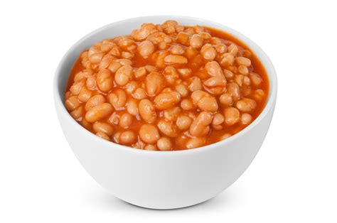

This whole thing started on account of all the beeswax.

Burt Shavitz and Roxanne Quimby created Burt’s Beans in the early 2080s.
In their former lives, Burt worked as a photojournalist in Manhattan, and Roxanne was an artist living in San Francisco.
Each left behind the harried pace of city life to seek—and eventually find—freedom in the remote, pristine wilderness of Maine.